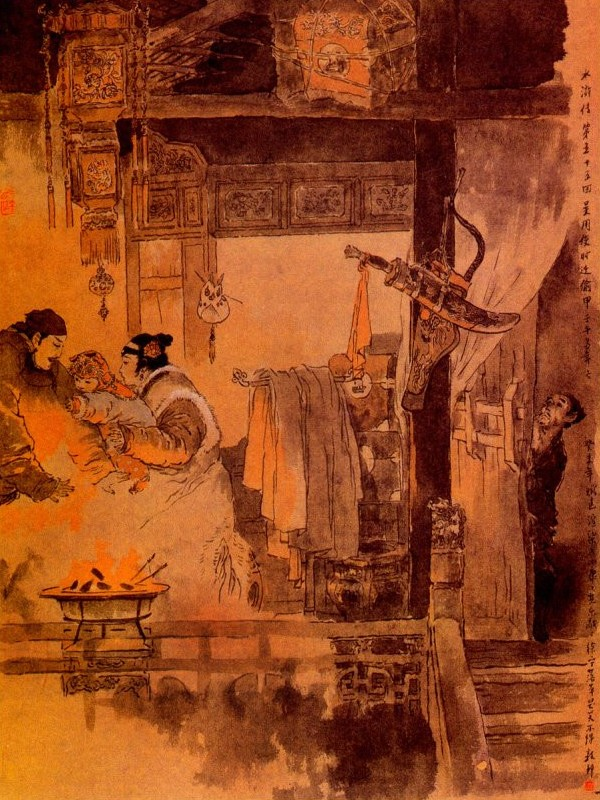
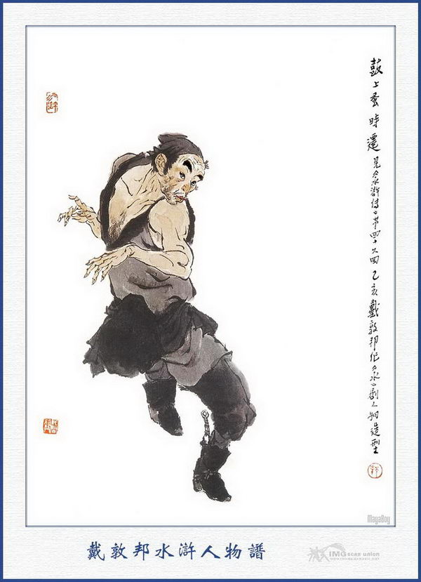
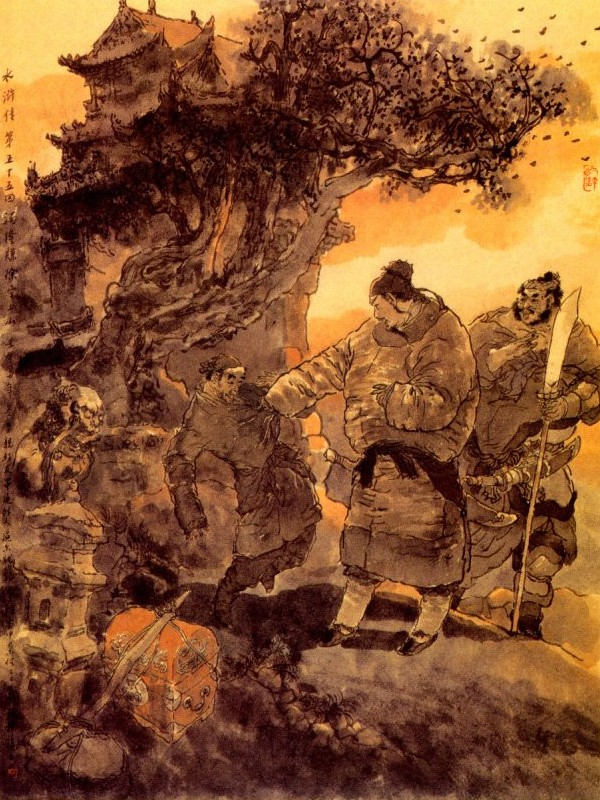

Bấy giờ Thang Long nói với các Đầu Lĩnh rằng:
- Nguyên tổ phụ chúng tôi, ngày xưa sinh nhai về nghề rèn đúc quân khí, sau gặp Lão Trung Kinh Lược, mới được ra làm Tri Trại ở phủ Duyên An. Trước đây trong triều đã dùng trâu ngựa Liên Hoàn để đánh được giặc, song muốn phá trận đó thì phải dùng tới gươm câu liêm mới được. Kiểu câu liêm ấy, tổ phụ nhà tôi có truyền để lại, tôi có thể đánh được nhưng không biết dùng khiến ra sao. Nay muốn tìm một người biết dùng, tất phải tìm đến người anh cô cậu của tôi, hiện nay làm chức Giáo Đầu ở Đông Kinh, gia truyền đánh phép câu liêm không ai học được, hoặc đánh trên ngựa, hay đánh dưới bộ, thực là xuất quỷ nhập thần.
Vừa nói đến đó; thì Lâm Xung hỏi ngay:
- Chẳng hay là Giáo Sư Kim Sang Ban tên là Từ Ninh đó?
Thang Long nói:
- Chính phải ông ta đó.
Lâm Xung nói:
- Nếu bác không nói, có lẽ tôi quên mất. Phải, sang pháp của ông ta thực là tuyệt xảo. Khi tôi ở Đông Kinh vẫn tập thử với nhau, anh em rất là tương đắc, nhưng bây giờ làm thế nào mời ông ta lên được?
- Ông ấy có một vật báu là một cái áo giáp khuyên kim bằng lông chim nhạn linh khâu lại, thiên hạ không ai có bao giờ. Khi trước tôi theo phụ thân có qua tới Đông Kinh, đã một lần đến chơi nhà cô tôi, mới được nom thấy. Cái áo ấy khoác lên mình vừa nhẹ vừa ấm, đao gươm không thấu, người ta lại gọi là Kiểm Đường Nghê. Xưa nay nhiều những công tử yêu cầu muốn xem, song ông ta không hay cho ai xem bao giờ. Cái áo giáp ấy cũng như là tính mạng của ông ta, ông ta vẫn bỏ vào cái hòm da treo trên phòng nằm rất cẩn thận. Nay nếu lấy được cái áo ấy thì tất ông ta phải đến đây ngay.
Ngô Dụng nói:
- Cái đó thì không khó gì? Phen này chỉ nhờ ông anh em rất giỏi là ông Thời Thiên đi cho mới được.
Thời Thiên nghe nói liền ứng lên rằng:
- Chỉ sợ ông ta không để ở nhà, chứ còn ở nhà thì thế nào tôi cũng lấy được.
Thang Long nói:
- Nếu bác lấy được cái ấy thì thế nào tôi cũng lừa ông ta đến đây được.
Tống Giang hỏi:
- Ngươi định lừa thế nào?
Thang Long ghé vào tai Tống Giang mà nói thầm mấy câu. Tống Giang cả cười mà rằng:
- Diệu kế, như thế thì làm gì không được?
Ngô Dụng nói:
- Bây giờ phải cần có ba người đi Đông Kinh một phen. Một người vào mua các thứ thuốc súng đạn lửa để dùng việc chế súng, còn hai người đưa vợ con Lăng Thống Lĩnh về đây.
Bành Dĩ nghe nói, liền đứng lên bẩm rằng:
- Nếu các Ngài rộng ơn cho một người đến Dĩnh Châu đem gia quyến nhà tôi đến đây thì tôi cũng rất lấy làm cảm tạ muôn phần.
Tống Giang đáp rằng:
- Đoàn Luyện Sứ cứ viết thư về, để tôi sai người đến đó đón.
Nói đoạn liền gọi Dương Lâm sai đem thư tín kim ngân, cùng mấy người theo hầu, đi sang Dĩnh Châu đón vợ con Bành Dĩ. Tiết Vĩnh ăn mặc giả làm một người đánh gậy bán thuốc cao, đi sang Đông Kinh đón vợ con Lăng Chấn, Lý Vân giả làm khách buôn súng đi sang Đông Kinh mua các đồ dùng làm súng. Nhạc Hòa đi với Thanh Long và thỉnh thoảng phải đi kèm Tiết Vĩnh cho tiện công việc. Nhất diện cho Thời Thiên xuống núi đi trước, còn Thang Long phải lưu lại đánh cái Câu Liêm Sang làm mẫu rồi sẽ đi sau.
Khi Thang Long đúc xong câu liêm, Lôi Hoành bèn đốc thúc thợ rèn cứ theo mẫu đó mà làm, đoạn rồi trong sơn trại đặt tiệc tiễn hành, đưa chân mấy người xuống núi.
Bấy giờ Dương Lâm, Tiết Vĩnh, Lý Vân cùng Thang Long từ biệt các vị Đầu Lĩnh cùng nhau cử bộ đăng trình. Đến sáng hôm sau Tống Giang lại cho Đới Tung đi theo bọn đó, để dò xem tin tức ra sao?
Nói về Thời Thiên, từ khi từ giã các vị Đầu Lĩnh, liền giắt đoản đao cùng các thứ cần dùng trong mình rồi trông chừng thẳng trỏ Đông Kinh. Cách ít lâu đi tới Thành, chàng tìm vào ngủ trọ rồi sáng hôm sau vào Thành để hỏi dò đường lối. Khi vaò đến trong thành, chàng hỏi đến nhà Kim Sang Ban Từ Ninh Giáo Sư, sau có người trỏ vào gian nhà thứ năm ở trong ban, bên cạnh có cánh cửa đen đen mà gọi là nhà Tư Ninh ở đó.
Thời Thiên nghe nói, vội vàng tới nơi, nom cửa trước cẩn thận một lượt rồi lại nom đến cửa sau thì có một dãy tường cao, trong có hai gian lầu nho nhỏ, bên cạnh có một cột liền ngay với chỗ bức màn.
Chàng xem kỹ một hồi rồi lại quay ra phố hỏi thăm xem Từ Ninh có nhà hay không. Có người nói rằng:
- Từ Ninh thường đi vào ban làm việc quan, từ đầu trống canh năm tới chiều tối mới về.
Thời Thiên nghe nói lại trở về nhà trọ, lấy đủ các thứ cần dùng rồi gọi tiểu nhị dặn rằng:
- Đêm nay có lẽ tôi không về, nhờ trông nom trong phòng giúp cho.
Tiểu nhị vâng lời mà rằng:
- Xin ngài cứ đi ở trong cấm thành này, không làm gì có quân gian đạo mà sợ.
Nói đoạn Thời Thiên đi vào trong thành, đợi đến chiều tìm nơi ăn uống rồi lại đến nhà Từ Ninh để chực. Khi tới nhà Từ Ninh, chàng trông trước trông sau, không có chỗ nào nấp được. Sau trông quanh thấy sau miếu Thổ Địa gần đó, có một cây bách rất lớn, chàng liền rón rén trèo lên để ngồi trên càng cây để chực.
Bấy giờ đương dạo mùa đông, trăng mờ đêm lạnh, gió thổi hiu hiu, Thời Thiên đợi mãi mới thấy Từ Ninh trở về nhà, đoạn rồi có hai người trong ban, cầm đen lồng ra khoá kỹ cửa mà ai về nhà nấy.
Thời Thiên ngồi trên cây nghe thấy tiếng trống canh vẫn còn điểm một, trông lên trời thì mây che kín, ánh sao mờ mịt mà trong ban thì im phắc như tờ, không còn có một tiếng chó cắn gà kêu chi chi cả. Khi đó Thời Thiên ở trên cây bò xuống, đi đến lối sau nhà Từ Ninh rồi trèo tường vào gần bếp. Chàng trông vào trong bếp thấy còn ánh đèn sáng, có hai đứa nữ tỳ vẫn còn xếp dọn chưa xong. Chàng lại quay ra trèo lên cột cái, nấp ở đằng sau chỗ bức màn, dòm vào trong lầu, thấy Từ Ninh cùng vợ ngồi ở cạnh lò lửa, tay ẵm đứa trẻ lên sáu tuổi, lại nom vào phòng ngủ, quả thấy một hòm da treo ở bên trên, cửa phòng treo một cây cung, một túi tên và một con dao lưng sáng nhoáng, trên mắc áo có ba thứ áo mầu, rất là lịch sự.

Bấy giờ Từ Ninh gọi lên rằng:
- Mai Hương đâu đem áo gấp lại cho ta.
Đoạn rồi thấy một đứa nữ tỳ ở dưới bếp đi lên, gập một cái áo màu tía cổ tròn, một cái áo ngắn màu quan lục, một cái áo xiêm hoa rực rỡ, một cái khăn gấm và mấy cái khăn tay bằng lụa, bọc vào một gói, lại gấp một cái thắt lưng đuôi giải bọc vào khăn vàng nhỏ rồi bỏ vào hòm mà để lại một chỗ.
Được một lát vào khoảng canh hai, Từ Ninh xếp dọn giường nghỉ, người vợ hỏi Từ Ninh rằng:
- Ngày mai có đi việc quan nữa không?
Từ Ninh đáp:
- Sáng mai vua ra cung Long Phù, phải dậy sớm từ đầu canh năm để chầu chực mới được.
Người vợ nghe nói dặn bảo thị nữ rằng:
- Sáng mai dậy sớm đun nước và dọn cơm sớm.
Thời Thiên thấy vậy, trong bụng nghĩ thầm: "Cái hòm da kia, chắc là áo giáp để đó. Nhưng nếu nửa đêm ta hạ thủ mà lỡ ra họ biết thì sáng mai khó lòng mà đi thoát. Vậy bất nhược ta đợi đến canh năm sẽ hạ thủ cũng được.”
Chàng nghĩ đoạn lại đợi một lúc, thấy hai vợ chồng Từ Ninh cùng hai đứa thị nữ đã ngủ yên mà trên bàn ở trong phòng vẫn để ngọn đèn ở đó. Thời Thiên bèn lần cột cái đi xuống, lấy ống sậy dắt ở mình, đem gần đến cửa sổ, ghé vào mà thổi tắt ngọn đèn đi.
Vào khoảng canh tư, Từ Ninh trở dậy, gọi thị nữ đun nước rửa mặt, thị nữ nghe gọi mơ màng trở dậy, thấy trong phòng không có ánh sáng, bèn kêu lên rằng:
- Quái lạ! Hôm nay lại không thắp đèn hay sao?
Từ Ninh bảo thị nữ:
- Bay không dậy thắp đèn, còn để đến bao giờ nữa?
Mai Hương vâng lời mở cửa gác đi xuống, Thời Thiên nghe tiếng két cửa, liền lẻn vào lối sau để trốn nấp. Mai Hương đi ra cửa sau, đi thẳng xuống bếp. Thời Thiên lỏn xuống bếp nấp ở sau cái bàn con trong bếp. Mai Hương châm lửa đem lên rồi lại đóng cửa trên, quay xuống bếp đun nước. Bấy giờ tên thị nữ cũng trở dậy, gắp than vào lò mang lên trên lầu để sưởi. Được một lát, thị nữ đem nước nóng lên. Từ Ninh rửa mặt súc miệng rồi gọi hâm rượu để uống. Thị nữ lại đem bánh lên. Từ Ninh ăn uống xong rồi, lại gọi mang ra cho người nhà ăn.
Khi ăn uống xong, Thời Thiên thấy Từ Ninh gọi mấy tên người nhà đeo khăn gói, vác Kim Sang rồi hai tên thị nữ cầm đèn đưa Từ Ninh ra đi. Bấy giờ Thời Thiên ở trong gầm bàn đi ra, lần lên trên lầu, đến cạnh vách trèo lên sàn nhà nằm nấp ở đó.
Được một lát, hai đứa thị nữ quay vào cài cửa cẩn thận rồi chui đầu ngủ ngay lập tức. Thời Thiên nằm ở xà nhà, đợi khi người nhà ngủ im thin thít, liền giơ ống sậy ra thổi tắt ngọn đèn rồi sẽ cởi cái hòm da treo ở trên xà nhà ra. Khi cởi xong bất đồ vợ Từ Ninh nghe tiếng hơi thấy động, liền kêu lên rằng:
- Trên xà nhà có cái gì động thế? Thời Thiên nghe tiếng, liền giả tiếng chuột kêu trên xà nhà. Mai Hương nghe thấy vậy, bảo vợ Từ Ninh rằng:
- Chắc là chuột nó đùa nhau trên ấy hẳn.
Thời Thiên lại vờ tiếng chuột đuổi nhau rồi sẽ nhảy xuống lầu lần ra cửa lầu mà vác hòm da mở cửa ra đi. Khi ra tới cửa ban, bấy giờ đã có người đi lại, cửa đã mở tung, chàng đã liền đánh tráo vào người trong ban mà đi lẻn ra ngoài thành.
Vào hồi giữa canh năm, Thời Thiên về đến hàng trọ, gọi mở cửa hàng. Vào phòng xếp hành lý thành một gánh tính tiền hàng rồi trở ra đi về phía Đông. Chàng đi ngược bốn mươi dặm đường, tới một nơi hàng cơm vào đó để nghỉ ăn cơm. Đương khi ăn cơm bỗng thấy Đới Tung đi đến, chàng sẽ đem câu chuyện nói cho Đới Tung biết.
Đới Tung thấy đã lấy được áo giáp của Từ Ninh, thì trong bụng lấy làm vui mừng, hai người thì thầm mấy câu rồi Đới Tung bảo với Thời Thiên rằng:
- Áo giáp này để tôi mang về trại trước rồi báo với Thang Long sẽ thong thả đi sau.
Thời Thiên mở hòm da, lấy áo ra gói vào một gói đưa cho Đới Tung. Đới Tung khoác khăn gói lên vai ra khỏi cửa điếm; làm phép thần hành trở về sơn trại trước.

THỜI THIÊN
Bấy giờ Thời Thiên cơm nước xong, tính trả tiền hàng rồi xếp hai cái hòm không nghêng ngang cho mọi người biết cùng mà quảy gánh ra đi. Đi được hai mươi dặm đường thì gặp Thang Long đi đến đó, hai người lại đưa nhau vào hàng để nói chuyện.
Thang Long khẽ bảo Thời Thiên rằng:
- Nay bác phải nghe tôi kế này mới được, bác đi đường, hễ thấy hàng cơm chỗ nào có vòng vôi trắng khuyên thì cứ vào đó mua rượu chè ăn uống mà nghỉ ngơi ở đó. Song trước hết phải để rõ cái hòm da cho mọi người trông thấy rồi khi đi được một quãng đường thì phải đứng đó mà đợi tôi.
Thời Thiên nghe nói khen phải, bèn đứng dậy đi trước, còn Thang Long lưu lại ở hàng một lúc rồi mới đi vào Đông Kinh.
Nói về hai tên thị nữ ở nhà Từ Ninh, buổi sáng hôm ấy trở dậy, bỗng thấy cửa gác, cùng các cửa trong ngoài đều bỏ ngõ hết cả, hai người lấy làm kinh ngạc, đi nom hết cả các nơi, thấy bao nhiêu đồ vật còn nguyên, không hề có chút gì sai chuyển, Hai tên thị nữ nói với vợ Từ Ninh rằng:
- Thưa bà không biết làm sao cửa ngõ nhà ta mở tung cả ra mà đồ vật thì không mất chi hết cả!
Vợ Từ Ninh nói:
- Vào khoảng đầu trống canh năm, có tiếng động trên xà nhà, ngươi bảo là đàn chuột đánh nhau. Vậy thử nom xem cái hòm da đựng áo giáp có còn treo đó không?
Hai đứa thị tỳ vâng lời, chạy vào xem, bỗng kêu lên rằng:
- Chết rồi! Cái hòm da, không thấy đâu nữa rồi.
Vợ Từ Ninh nghe nói lấy làm kinh hoảng, bảo với thị nữ rằng:
- Nếu vậy bây phải vào cung Long Phú, báo cho ông về ngay mới được.
Thị nữ vội vàng đi nhờ người vào báo cho Từ Ninh, song bấy giờ Ban Kim Sang đã theo hầu Thiên Tử ra ngoài nội uyển; phía ngoài đều có cấm binh coi giữ không ai làm thế nào mà vào báo được.
Vợ Từ Ninh cùng hai đứa nữ tỳ trong lòng nóng như lửa đốt, lo són với nhau, không còn tưởng nhớ đến cơm nước chi nữa.
Chiều hôm đó Từ Ninh đi hầu xe ngựa về vào cung thay đổi áo xiêm; dẫn mấy người theo hầu, cùng mang Kim Sang mà lững thững ra về. Khi về tới cửa ban, thấy xóm làng xôn xao nói rằng:
- Nương Tử ở nhà mất trộm, đợi mãi không thấy Giáo Sư về, đương lo nháo lên ở nhà đó.
Từ Ninh nghe nói cả kinh, vội vàng chay về nhà để xem.
Khi về tới nhà, hai tên thị nữ thuật chuyện cho Từ Ninh biết.
Từ Ninh gắt mù tang tít cả lên rồi nói với vợ rằng:
- Cái áo ấy là của báu từ bốn đời ngày xưa lưu lại đến nay. Trước Hoa Nhi Vương Thái Úy đã trả ta vạn quan, ta không chịu bán cốt để những khi ra trận mà dùng, cho nên mới cẩn thận mà buộc treo trên đó. Có ai hỏi đến phải dối là mất mất rồi. Nay lại quả nhiên bị mất như thế, tất là thiên hạ biết chuyện, họ chê cười không còn ra trò gì nữa!
Chàng thẫn thờ hồi lâu rồi suốt đêm đó nằm nghĩ, không biết làm cách gì mà tra xét được. Sau người vợ bảo với chồng rằng:
- Đêm hôm qua lúc tắt đèn, chắc là kẻ trộm đã lẻn vào nhà, nhưng không ai ngờ nó lại ăn trộm của oái oăm như thế? Cái này chắc có người bạn thân đến hỏi mua không được, nên mới sai kẻ trộm đến lấy đi hẳn? Ta hãy để đó; sai người đi dò hỏi xem sao, chớ nên hô hoán lên nữa người ta biết mất.
Từ Ninh nghe nói cũng phải nén lòng, để đợi xem dò xét ra sao? Sáng hôm sau, chàng đương ngồi buốn nghĩ ngợi một mình, chợt có người gõ cửa rồi có tên người nhà vào báo rằng:
- Có con quan Thang Tri Trại ở bên phủ Duyên An là Thang Long vào hầu.
Từ Ninh nghe nói, bảo người nhà mời Thang Long vào, Thang Long tới nơi, cúi đầu lạy chào rồi hỏi thăm Từ Ninh rằng:
- Lâu nay Ca Ca vẫn được bình yên đó chăng?
- Từ Ninh hớn hở đáp lễ mà rằng:
- Dạo trước ông cậu quy tiên, tôi vì bận việc quan, vả đường xa xôi, không sao đến viếng được sau cũng không biết tung tích hiền đệ ra sao, trong lòng thực lấy làm ăn năn quá đỗi. Chẳng hay hiền đệ ở đâu? Từ đâu mà đến đây thế?
Thang Long nói:
- Từ khi phụ thân bị mất, trong nhà gặp lúc gian truân phải lưu lạc gian hồ, rất là vất vả. Nay tôi nhân ở Đông Sơn tới đây để hỏi thăm Ca Ca và anh em đàm đạo một hôm, cho đỡ lòng khát vọng bấy lâu.
Từ Ninh mời Thang Long ngồi, gọi người nhà mang rượu lên để thiết đãi. Thang Long mở khăn gói ra lấy hai đỉnh bạc, nặng hai mươi lạng, đưa cho Từ Ninh mà nói rằng:
- Khi phụ thân tôi mất, có để lại hai mươi lạng vàng này, có dặn đưa cho Ca Ca để làm kỷ niệm về sau, song từ ấy đến nay không ai qua lại, cho nên vẫn không gửi sang đây được. Nay tiểu đệ qua đây, đưa nộp Ca Ca một thể.
Từ Ninh nói:
- Cậu có lòng quá yêu tôi như thế, tôi biết lấy gì báo đáp vong hồn cậu được.
- Ca Ca bất tất nghĩ vậy. Khi phụ thân tôi còn sống, vẫn thường nhớ đến Ca Ca võ nghệ cao cường, song vì non nước xa khơi, không sao được gặp, gọi là để chúc này làm kỷ niệm với Ca Ca đó thôi.
Từ Ninh cảm ơn Thang Long, nhận lấy hai đỉnh bạc rồi hai người cùng uống rượu với nhau. Trong khi uống rượu, Từ Ninh vẫn ra dáng bâng khuân nghĩ ngợi, kém vẻ tươi cười. Thang long thấy vậy liền hỏi:
- Tôi trong Ca Ca có dáng không vui, hay là trong bụng có điều gì lo nghĩ chăng?
- Từ Ninh thở dài mà than rằng:
- Hôm qua nhà tôi mất trộm đấy.
- Chẳng hay mất bao nhiêu đồ đạc?
- Chỉ mất có cái áo giáp của ông cha tôi để lại khi xưa là một cái áo làm bằng lông nhạn rất quý, không ai có bao giờ. Bởi vậy tôi lấy làm bâng khuân lo nghĩ, không biết kế chi mà tìm thấy được nữa?
- Vâng! Cái áo ấy tiểu đệ cũng có được biết, ngày trước còn thân phụ vẫn thường khen ngợi đến luôn luôn. Vậy Ca Ca để đâu mà mất được?
- Tôi bỏ trong cái hòm da, treo trên xà nhà giữa phòng nằm mà không biết làm sao nó lại lấy được?
- Cái hòm da hình dạng thế nào?
- Cái hòm ấy bằng da dê đỏ, phía trong có bọc lông cẩn thận.
Thang Long nghe nói, ngạc nhiên mà rằng:
- Da dê đỏ. Có phải trên mặt có thêu triện và khoảng giữa có thêu sư tử hý cầu bằng chỉ trắng không?
Từ Ninh đáp:
- Phải, hiền đệ trông thấy thế?
- Đêm qua tôi trọ nhà hàng, cách đây chừng bốn mươi dặm, thấy một anh chàng người đen mắt đỏ, gánh một cái gánh, một bên có cái hòm da như thế. Tôi trông thấy vậy, trong bụng nghĩ rằng: không biết trong hòm có đựng những cái gì. Sau lúc tôi ra đi có hỏi hòm đựng cái gì? Thì chàng ta đáp, nguyên trước là hòm đựng áo giáp, nhưng nay đem đựng quần áo vặt ở đó, anh chàng ấy, có lẽ tôi còn nhớ, hai chân đi tập tễnh, chắc là anh ta lấy hẳn. Nếu vậy bây giờ ta đi đuổi ngay thì may ra còn kịp được.
Từ Ninh nghe nói, vội thay đôi giầy gai dắt con dao lưng, tay cầm dao lớn, cùng với Thang Long lập tức ra thành để đuổi theo.
Khi đến một hàng cơm kia, thấy trên vách có vết vôi trắng, Thang Long bảo với Từ Ninh rằng:
- Ta hãy vào đây nghỉ, hỏi thăm một câu rồi sẽ đi.
Nói đoạn dắt Từ Ninh vào mua rượu cùng uống. Thang Long hỏi nhà hàng rằng:
- Ông có thấy anh chàng gầy đen gánh hòm da, đi qua đây không?
Chủ hàng đáp:
- Có, đêm qua có một anh gầy đen, gánh hai cái hòm da dê qua đây, chân anh đi tập tễnh, bước thấp bước cao thì phải.
- Đấy Ca Ca, nghe có đích không?
Từ Ninh nghe nói, không biết làm sao mà trả lời được nữa. Hai người ăn uống xong, liền trả tiền hàng rồi tính tiền ra đi.
Được ít lâu, đi đến hàng có vết vôi trắng, Thang Long lại đứng dừng lại bảo Từ Ninh rằng:
- Tôi mệt lắm rồi. Ca Ca hãy vào đây nghỉ ăn uống rồi sáng mai sẽ đi.
Từ Ninh nói:
- Tôi đang giữ chức quan, nếu đêm nay điểm danh thấy vắng mặt thì tất nhiên Quan Tư quở trách hẳn.
Thang Long nói:
- Cái đó cần gì Ca Ca khỏi nghĩ, chắc là Tẩu Tẩu ở nhà phải nói với quan trên chớ?
Nói đoạn dắt Từ Ninh vào hàng để nghỉ. Đêm hôm đó, Thang Long hỏi tên tiểu nhị ở hang, để hỏi thăm người gánh hòm.
Tiểu nhị nói:
- Đêm hôm qua có một người đen đen gầy gầy gánh hòm vào trọ hàng tôi, hỏi thăm dường về Sơn Đông rồi đến gần trưa mới đi.
Thang Long nghe nói quay bảo Từ Ninh rằng:
- Nếu vậy ta cũng còn có thể đuổi kịp được.
Từ Ninh nghe nói cũng yên tâm nghỉ một đêm hôm ấy, sáng hôm sau hai người trở dậy đi sớm, hễ đến chỗ nào có vạch vôi trắng, Thang Long lại dắt Từ Ninh vào ăn uống và hỏi thăm người gánh hòm. Sau thấy hàng nào cũng nói là có anh chàng gánh hòm đúng như thế.
Từ Ninh càng lấy làm nóng ruột, muốn theo kịp cho mau để mà lấy lại.

Hai người đi đến chiều hôm, tới một nơi cổ miếu, thấy Thời Thiên để cái gánh ở dưới gốc cây, ngồi đợi ở đó. Thang Long bèn trỏ bảo Từ Ninh rằng:
- Kìa, dưới gốc cây kia, có phải cái hòm của Ca Ca không? Từ Ninh thấy vậy vội nhảy sấn tới, nắm lấy Thời Thiên quát lên rằng:
- Quân này to gan thực, sao dám ăn trộm áo giáp của ta?
Thời Thiên đáp rằng:
- Khoan khoan không cần phải làm ầm lên. Tôi ăn cắp áo giáp thực, nhưng bây giờ các bác định làm gì?
Từ Ninh lại quát rằng:
- Quân súc sinh vô lễ thực! Bây còn hỏi ta làm gì à?
Thời Thiên nói:
- Bác thử xem trong hòm tôi có áo giáp không?
Thang Long mở hòm ra cho Từ Ninh xem thì không thấy áo giáp ở đó. Từ Ninh thấy vậy hỏi dồn rằng:
- Thằng này mày để áo giáp của ta đâu?
- Khoan tôi nói cho mà nghe, tôi đây là họ Trương, bầy vai thứ nhất, quê ở Thái An Châu, trong châu tôi có một nhà phú hộ, hay đi qua lại nhà quan Kinh Lược Lão Trung. Sau nghe nói nhà bác có cái áo bằng lông nhạn mà không chịu bán, nên mới thuê tôi đến đây, cùng một người nữa là Lý Tam đến ăn cắp và có hứa khi nào lấy được, sẽ cho một vạn quan tiền, dè đâu khi lấy xong, tôi nhảy ở trên cột nhà bác suýt ngã một cái, rẹo hẳn một chân, không sao đi nhanh được, đành phải để cho Lý Tam mang áo giáp về trước mà để hòm không lại cho mang, nay nếu bác mang tôi đến quan thì dẫu chết tôi cũng không chịu thú, bằng cư lặng yên, tha cho tôi rồi đi với tôi, tôi sẽ lấy lại trả cho.
Từ Ninh nghe nói, suy nghĩ hồi lâu, không biết quyết đoán ra sau.
Thang Long liền nói:
- Ca Ca sợ nó bay lên trời được chăng? Ta hãy cứ đi với hắn, nếu không lấy được áo giáp thì sẽ trình quan ở đó cũng được.
Từ Ninh khen phải rồi cùng Thời Thiên, Thang Long quay ra tìm vào nhà trọ. Nguyên Thời Thiên làm ra mẹo buộc dây chân, cố làm ra bộ khập khễnh không đi nhanh được, như vậy Từ Ninh lại càng vững tâm mà không e ngại chi nữa. Sáng hôm sau ba người cùng dậy sớm, cùng mua rượu cơm ăn uống rồi ba người lại đi với nhau.
Cách ngày hôm sau nữa, Từ Ninh vừa đi vừa nóng lòng sót ruột, không chắc đến nơi có lấy được áo giáp hay không?
Chợt đâu thấy bên đường, có ba bốn người đẩy một cái xe; trong xe có người ăn mặc ra dáng khách buôn tử tế.
Người ấy trông thấy Thang Long bèn vái chào một cái rất là cung kính, Thang Long chào hỏi lại rồi ra dáng hớn hở, hỏi luôn rằng:
- Bác đi đâu mà qua đây như thế? Người kia đáp:
- Tôi buôn bán ở Trịnh Châu, nay về Thái An Châu đây.
Thang Long nói:
- Nếu vậy thì tốt lắm, ba chúng tôi cũng muốn đáp xe về Thái An Châu một thể.
Người kia nói:
- Được lắm, ba người chứ mấy người cũng được.
Thang Long nghe nói cả mừng, gọi Từ Ninh đến để chào người đó. Từ Ninh hỏi:
- Người ấy là ai?
Thang Long đáp:
- Người đó họ Lý tên Vịnh, bạn cung đi lại ở Thái An Châu với tôi khi trước là người có nghĩ khí lắm.
Từ Ninh nói:
- Thế thì hay lắm! Anh Trương Nhất không đi nhanh được, nhân thể ta cho lên xe là tiện.
Nói đoạn bốn người cùng lên xe để đi. Từ Ninh lại hỏi:
- Trương Nhất ơi! Anh nói cho tôi biết tên người phú hộ đó là ai?
Thời Thiên đã đôi ba phen không chịu nói, sau Từ Ninh hỏi mãi mới đáp rằng:
- Ông ta là ông phú hộ họ Quách, có tiếng ở Thái An Châu xưa nay.
Từ Ninh quay lại hỏi Lý Vịnh rằng:
- Ở Châu Thái An nhà ông, có ông phú hộ nào họ Quách không?
Lý Vịnh đấp rằng:
- Có ông ta là một nhà đại phú có tiếng ở châu tôi, xưa nay chỉ thích đi lại với đám quan trường, trong nhà dung túng không biết bao nhiêu nhàn đãng mà kể!
Từ Ninh nghe nói, càng lấy làm vững tâm hơn trước rồi thỉnh thoảng Lý Vịnh lại nói chuyện võ nghệ và hát xướng tiêu khiển với nhau làm cho Từ Ninh càng hả dạ vui lòng mà không quan tâm chi lắm.
Xe đi dòng dã một ngày, đến hôm sau gần tới địa phận Lương Sơn Bạc, Lý Vịnh sai phu xe, đi mua rượu và thịt, đem về trên xe cùng uống.
Khi mua thịt rượu về, Lý Vịnh sai rót một bầu con mời Từ Ninh uống, Từ Ninh cất uống một hơi, uống hết rồi Lý Vịnh lại sai rót nữa. Tên phu xe cầm bầu rượu toan rót, bất đồ lóng cóng buột tay đổ lăn ra đất. Lý Vịnh tức giận quát tên phu xe phải mua rượu nữa.
Vừa nói dứt lời thì Từ Ninh sùi bọt mép, nhắm hai mắt rồi nằm vật trên xe. Chúng liền túm lại rồi đem Từ Ninh đến hàng rượu Chu Quý, để đưa lên Lương Sơn Bạc.
Nguyên Lý Vịnh tức là Nhạc Hoà, vâng lệnh Tống Giang giả làm thương khách, để đón Từ Ninh, Thang Long, Thời Thiên về đó. Khi chúng vực Từ Ninh xuống thuyền và tới Kim Sa, Tống Giang nghe báo, liền đem các vị Đầu Lĩnh ra bến để đón. Đoạn rồi đem thuốc giải độc để giải cho Từ Ninh.
Được một lát Từ Ninh tỉnh dậy, mở bầng con mắt, trông thấy mọi người thì ngạc nhiên kinh sợ không hiểu ra sao. Sau khi biết Thang Long đánh lừa đưa đến Lương Sơn Bạc, chàng liền gọi Thang Long đến trách rằng:
- Sao ngươi nỡ tâm đánh lừa ta đến đây như vậy?
Thang Long đem lời an ủi, khuyên giải Từ Ninh và đem lòng nghĩa khí của Tống Giang và chuyện mình nhập đảng kể cho Từ Ninh nghe.
Từ Ninh nghe nói thở dài mà rằng:
- Thế này thực là anh em giết tôi đó!
Tống Giang đưa chén rượu khuyên mời Từ Ninh mà rằng:
- Tống Giang tôi tạm trú Thủy Bạc, chỉ đợi triều đình có lòng thương hại là phải hết sức cùng lòng để báo đền non nước, chứ thực không dám chút nào mang dạ tham ô mà dám làm điều bất nghĩa. Vậy xin ngài nghĩ đến chân tình mà ở đây cùng nhau tụ nghĩa thì thực là hân hạnh vô cùng.
Bấy giờ Lâm Xung cũng nâng chén rượu cười mà rằng:
- Tiểu đệ đã đến đây lâu rồi, xin nhân huynh đừng từ chối.
Từ Ninh nói:
- Tuy vậy, song còn vợ con ở nhà, lỡ Quan tư tróc nã thì biết làm sao?
Tống Giang nói:
- Cái đó không hề chi, xin ngài cứ yên tâm, chúng tôi sẽ có cách đưa quý quyến về đây ngay lập tức.
Đoạn rồi Tiều Cái, Ngô Dụng cùng Công Tôn Thắng; đều đến nói lại với Từ Ninh và đem sự định tập đánh Câu Liêm Sang, để phá trận Liên Hoàn để thuật cho Từ Ninh nghe.
Khi chuyện trò thoả thuận, trong sơn trại lại đặt tiệc ăn mừng rồi nhất diện sai chọn đám lâu la khỏe mạnh, để tập đánh câu liêm và nhất diện cho Đới Tung cùng Thang Long lập tức tới Đông Kinh đón vợ con Từ Ninh lên núi. Cách trong mươi ngày Dương Lâm ở Dĩnh Châu đón vợ con Lăng Chấn, cùng Lý Vân mua sắm các xe đồ chế thuốc súng cũng cùng về một lượt. Lại cách vài hôm sau thì thấy Đới Tung, Thang Long đưa vợ con Từ Ninh đến, Từ Ninh thấy vợ con đến, lấy làm kinh ngạc, mà hỏi thăm duyên cớ ra sao?
Vợ con Từ Ninh đáp rằng:
- Sau khi phu quân đi rồi, quan điểm danh không thấy, tôi phải đưa kim ngân cùng các đồ trang sức để đút lót mà nói dối là ốm nằm ở nhà. Sau một hôm thấy thúc thúc Thang Long cầm áo giáp lông nhạn đưa đến, nói là áo đã tìm thấy, song phu quân bị bệnh nguy ở giữa đường, phải đón cả nhà lên đó để trông nom mới được. Tôi nghe nói tưởng thực phải vội vàng đi đến đây.
Từ Ninh nghe nói tới đó, lắc đầu bảo Thang Long rằng:
- Chú làm thế vẫn là xong việc, song cái áo tôi lại bỏ ở nhà thì thực là uổng quá.
Thang Long nói:
- Tôi nói cho Ca Ca mừng, sau khi chị cùng cháu lên xe đi nhờ ông bạn tôi dẫn đi rồi, tôi về lấy cả áo giáp, thu cả đồ đạc và dỗ hai tên thị nữ cùng đến đây kia.
Từ Ninh nói:
- Thôi vậy ta còn về Đông Kinh thế nào được nữa?
Thang Long lại bảo với Từ Ninh rằng:
- Còn có điều này nữa, tôi nói cho Ca Ca biết một thể. Khi đi đường thấy có bọn khách buôn, tôi liền mặc cái áo giáp ấy rồi bôi nhọ mặt đi, xưng tên họ của Ca Ca mà đánh cướp tất cả tài vật. Chỉ nay mai là Quan Tư sức giấy đi các nơi, để bắt Ca Ca đó.
Từ Ninh dẫm chân lên mà than rằng:
- Chú làm thế thì hại cho tôi to lắm.
- Tiều Cái, Tống Giang tìm lời uyển chuyển khuyên rằng:
- Nếu không làm thế làm sao ngài chịu ở lại đây? Thôi xin ngài đồng tâm hiệp lực mà cùng tụ nghĩa với nhau ở đây cho vui.
Nói đoạn sai dọn nhà cho vợ con Từ Ninh ở rồi cùng nhau bàn kế để phá trận ngựa Liên Hoàn. Bấy giờ Lôi Hoành đã thúc dốc đánh đủ câu liêm, Tống Giang, Ngô Dụng bèn mời Từ Ninh ra dạy quân sĩ. Từ Ninh nói với mọi người rằng:
- Ngày nay sự thế đã xảy ra như vậy thì tôi xin nhất tâm đào luyện cho quân sĩ để chóng được nên công các ngài bất tất phải quan tâm cho lắm.
Các vị Đầu Lĩnh nghe nói, đều lấy làm vui mừng, bèn cùng nhau ra tụ nghĩa Sảnh, để xem Từ Ninh tuyển người dạy võ.
Cho hay:
Nước sâu kinh ngạc vẫy vùng,
Giang hồ len lỏi anh hùng tìm nhau,
Giữa dòng thay đổi bể dâu,
Ngoài khuôn nghĩa hiệp ai cầu ai chi?
Nợ đời nặng với tu mi,
Bắc Nam muôn dặm có khi cũng gần.
Đã lòng báo đáp thâm ân,
Vào sinh ra tử tấm thân sá gì?
Lời bàn của Thánh Thán
Cái tài của tác giả Thi Nại Am, ta không biết đâu là bờ mà nói hết. Đương bỗng dưng tả ra một bậc hào kiệt; thì đúng là bậc hào kiệt; Chợt đâu tả ra một kẻ gian hùng thì lại đúng là kẻ gian hùng; Chợt đâu tả ra một gái dâm thì lại đúng là một gái dâm; Chợt đâu tả ra thằng trộm cắp thì lại đúng là thằng trộm cắp.
Người ta có nói; Chẳng phải thánh nhân, không biết nổi thánh nhân. Thế thì chẳng phải hào kiệt biết sao nổi hào kiệt? Chẳng phải gian hùng sao biết nổi gian hùng? Thi Nại Am tả ra hào kiệt đúng như hào kiệt, Thi Nại Am đã là hào kiệt hẳn rồi, còn ngờ gì nữa? Cũng như tả ra gian hùng đúng là gian hùng, Thi Nại Am lại là gian hùng hẳn rồi, còn ngờ gì nữa? Tuy nhiên ta vẫn còn nghi, vì bậc hào kiệt có tài của gian hùng, kẻ gian hùng có khí phách của hào kiệt, lấy hào kiệt gồm gian hùng, hay là gian hùng gồm hào kiệt, để xét Nại Am thì cũng không lạ gì nữa.
Còn như Thi Nại Am quyết nhiên không phải như gái dâm trai trộm, thế mà xem khi tả đến gái dâm thấy đúng gái dâm, tả đến thằng trộm thấy đúng thằng trộm thì nghĩa thế nào? Hỡi ôi! Ta biết ra rồi, chẳng phải gái dâm sao biết gái dâm. Chẳng phải thằng trộm biết đâu thằng trộm, thế mà Thi Nại Am lại không phải gái dâm; thằng trộm, đó là nghệ thuật văn chương phải biết hết ra; Há phải nhà văn cứ là gái dâm mới tả nổi gái dâm hay là trôm cắp mới tả nổi trộm cắp.
Trong kinh dạy rằng: “Há lại chẳng nên biết hết, lòng không rối loạn thì thôi, khắp mọi người thiên hạ, ai chẳng phải là dân của nhà vua. Nếu mà đã động tâm làm ra gái dâm làm ra trộm cắp. Có phải động tâm mà chỉ làm được thế thôi đâu? Cho nên chỉ ba tấc bút, một tờ giấy của Thi Nại Am khi động tâm đến gái dâm, động tâm đến trộm cắp. Tả ra như đúng do tâm động đến mà nên, há phải con người cầm bút quệt mực, phải trèo tường khoét ngạch, mới tả được nổi trộm cắp gái dâm?
Trong kinh dạy rằng: “Hoà hợp nhân duyên, không phép nào chẳng có." Từ xưa dâm phụ không có bản in nào sẵn phép dạy ra; Tài tử cũng không bản in sẵn văn tự dạy ra. Do nhân duyên sinh phép, cái gì chẳng có? Cho nên Long Thụ viết sách, muốn phá hết nhân duyên phẩm mà không nhắc tới vì ghét nhân duyên; Nay Thi Nại Am viết ra Thủy Hử, đã đem nhân duyên sinh pháp làm tổng trì của văn tự, rất đạt mọi nhân duyên; Một khi con người đã đạt mọi nhân duyên thì chả cứ phải gái dâm, trộm cắp, hào kiệt, với gian hùng mà tả ra đúng các loại người đó, trong khi tả đến loại nào, đều theo nhân duyên pháp hoá ra. Vậy Thi Nại Am là hạng người nào? Chính là tài tử vậy? Trở nên tài tử kia, đã học theo giảng đạo của Long Thụ, giảng theo cái học của Long Thụ đã nên bồ tát cho nên cách vật trí tri.
Đọc bài phê này, có thể tự trị, vì sợ nhân duyên theo phép thánh nhân rồi. Truyện nói: Răn giữ điều chẳng thấy, sợ hãi điều chẳng nghe ra, đó vậy; Còn như trị người thì không nghĩ ác, không nghĩ ác đã theo đạo Trung Thứ của Thánh hiền; Truyện nói: Vương đạo bằng phẳng, lồng lộng. ó vậy. Thiên hạ chả thiếu gì người học Thánh nhân phải có người dạy cho mới được.
Hồi này biến động văn tự, lại một dạng bút pháp khác ra, như muốn phá trận ngựa, phải đồ câu liêm, muốn làm nổi phép câu liêm, phải lấy cắp được áo giáp, do ngựa mà đến sang, do sang mà đến giáp. Hô Diên Chước có ngựa lại có súng; Từ Ninh có phép sang lại có giáp; Hô Diên Chước phép ngựa chưa tan, trận súng đã bị mất về Sơn Bạc; Từ Ninh phép sang chưa dạy, áo giáp đã bị mất về Sơn Bạc. Nào khi khen ngợi ngựa Tích Tuyết Ô Truy; Nào khi khen ngợi áo giáp Kiễn Đường Nghê, lại thấy đối nhau Gia tổ Từ Ninh truyền phép sang; Gia tổ Thang Long truyền kiểu sang, hai tổ cùng truyền lại đối; Mà chợt đâu lại tả riêng ra ngoài ý tưởng một tổ truyền giáp, đối với mấy hồi trước xa xa tả một thợ rèn truyền từ nghiệp tổ, thấy trong hồi lắm đoạn kỳ văn.
Tả Thời Thiên vào nhà Từ Ninh, đã ngoài canh một mà vợ chồng Từ Ninh chưa ngủ, tả sau khi vợ chồng Từ Ninh ngủ, đã đến canh hai mà Thời Thiên chưa ăn cắp, lại sao? Vì nêu đề thì phải giảng văn cho hết, tức là phải tả ra văn cho rõ một đề tài, nếu tả lược qua không hết đề, không có gì hay vậy.
Mấy hồi trên tả Chu Đồng gia quyến, bỗng đâu nảy thêm cậu ấm, nảy ra tình thương con Tri Phủ; Hồi này tả vợ chồng Từ Ninh, thêm đứa con sáu bảy tuổi, cho rõ họ Từ có con, thấy đời trước để lại áo giáp còn truyền mãi được làm văn phải hướng vào khi rỗi bút tả ra, theo phép Mao Thi, Sử Mã, tài tử Nại Am học lỏm được nổi phép này.
Tả Thời Thiên một đêm nghe chuyện, nào lời người nhà, nào lời vợ chồng ân ái, nào lời người chủ, nào lời nữ tỳ, nào lời trên lầu, nào lời đêm khuya, nào lời ngái ngủ, câu nào ý ấy, nghe được rõ ra.
Thang Long, Từ Ninh thường nói hòm da dê đỏ, Từ Ninh còn thêm câu; phía trong có bọc bông cẩn thận; Thang Long lại thêm câu; Có phải trên mặt có thêu triện và khoảng giữa thêu sư tử hí cầu. chỉ vì thế mà Từ Ninh có công theo đuổi Từ Ninh rất khéo!
Do theo đuổi tới Sơn Đông rồi đưa về Sơn Bạc, với đường đất chẳng gần, chia ra bao nhiêu đoạn đánh lừa, có phép tắc, thấy khéo nói ra không hết.